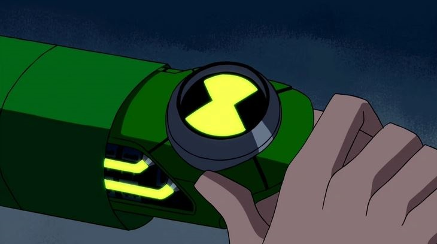

ALIENÍGENAS DEL ULTIMATRIX
El ultimatrix es una copia del omnitrix recalibrado hecha por Albedo y su función es la de superar al original, teniendo una mejor forma de escanear ADNs, es mucho más facil de personalizar y puede volver supremo al alienígena en el que se transforma, pero tiene la desventaja de que no cuenta con el seguro de vida.

FUEGO PANTANOSO SUPREMO
Ben 10 llamó así a este alien ya que es el mismo pero de forma suprema, esto quiere decir que es un methanosiano pero mejorado y a diferencia no tiene planeta de origen ya que proviene de una simulación del ultimatrix. Sus habilidades son poder lanzar llamas azules hechas de queroseno en lugar de ser de metano, lanzar bombas de sus brazos, su espalda y su cabeza y tener un mejor control de las plantas pudiendo realizar cosas más complejas y complicadas que antes.
APARECE EN:

HUMUNGOSAURIO SUPREMO
Albedo nombró a esta primer creación del ultimatrix así para demostrale a Ben 10 lo que significaba. Este alien fue creado por una simulación en el ultimatrix donde su madre casi se lo come tras nacer. Los poderes que tiene son: ser más fuerte que 50 vaxasaurianos, contar con una armadura blindada que proviene de su interior, una maza en la punta de la cola y unos brazos capaces de transformarse en un lanza cohetes, el cual lanza proyectiles metálicos inestables.
APARECE EN:
FRÍO SUPREMO
Es un necrofriggiano supremo el cual nació de la simulación que realizó Ben 10 con el ultimatrix, la cual resultó en lo que parece un recolor, pero eso es solo para camuflarse en la otra mitad del planeta, también, se volvió más rapido y obtuvo la capacidad de expulsar y crear un hielo tan frío que quema resultando en llamas que congelan al oponente.
APARECE EN:
ECO ECO SUPREMO
Eco Eco Supremo es un sonorosian que paso por una simulación en el ultimatrix creada por Ben 10, en la cual se vio forzado a dejar de esconderse en las cuevas y aprender a defenderse y camuflarse en el cielo azul de su planeta, también se volviÓ más grande y resistente siendo capaz de enfrentarse a un petrosapien (La especie de Diamante) con facilidad y perdió la habilidad de multiplicarse, pero ganó la habilidad de lanzar discos que se multiplican a voluntad y que lanzan ondas sonoras más fuertes que antes, siendo capaces de desturir tanques blindados.
APARECE EN:
MONO ARAÑA SUPREMO
Asi lo llamó Ben 10 al aracnochimpancé supremo, siendo resultado de la simulación del ultimatrix, donde desarrollo más fuerza, unas patas de araña y la capacidad de lanzar redes por la boca las cuales son mucho más resistentes que antes y lo realiza con mayor precisión, pero al hacerlo se vuelve incómodo al no poder sostenerlas bien.
APARECE EN:
BESTIA SUPREMA
Bestia Suprema es un vulpin supremo el cual vio la peor situación posible en la simulación del ultimatrix, la cual resultó en mejorar el pelaje de la especie volviendolo más duro que el concreto, le acomodó las garras haciendo que sea más fácil cazar a las presas, unas espinas en la espalda, una garra en la punta de la cola como si fuera un escorpión y la capacidad de hablar con otras especies para evitar conflictos y llegar a un acuerdo.
APARECE EN:
MUY GRANDE SUPREMO
Esta evolución del to'kustar solo fue usada en una ocasión que la requería. La simulación del ultimatrix provocó que el alien se volviera el triple de tamaño que tenía originalmente, tuviera un metabolismo más eficiente y rápido, un mejor control de energía cósmica de las tormentas cósmicas que generaba y le otorgó una mayor velocidad al correr y unos mejores reflejos.
APARECE EN:
FASTTRACK
Fasttrack es un citrakayah el cual es proveniente del planeta Chalybeas. Este alien fue desbloqueado por Ben 10, el cual lo utilizó para reemplazar a XLR8 en los momentos que necesitaba velocidad y fuerza. Esta especie tiene la capacidad de aumentar su velocidad igualando la de un misil dirigido, tienen la fuerza de un humano aumentada y unas especies de cuchillas en los brazos las cuales puede usar como espada o cuchillo.
APARECE EN:
CAMALEÓN
Este alien es un merlinisapien del planeta Sauria. Fue escaneado de un preso que perdió todo y tras tratar de cobrar venganza demostró sus habilidades motivo por el que Ben 10 lo llamo "Camaleón". Sus poderes eran la habilidad de trepar todas las superficies sólidas sin problemas, poder hacerse invisible por completo incluyendo cosas extras que tenga y poder sacar unas cuchillas de su cola.
APARECE EN:
EATLE
Eatle es el nombre que Ben 10 le puso al oryctini proveniente del planeta Coleop Terra. Este alien fue utilizado en varias ocasiones en las que se necesitaran fuerza y resistencia. Esta especie es capaz de devorar muchos tipos de materia y lanzarlos como un rayo de energía, tener una gran fuerza y una gran resistencia ante impactos.
APARECE EN:
AMENAZA ACUÁTICA
Fue el primer alienígena que Ben 10 escaneó de la galaxia de Andrómeda, esta especie es un orishan del planeta Kiusana el cual es un mundo acuático con partes terrestres. Esta muestra proviene de Bivalvan siendo uno de la especie el cual Ben 10 ayudó. Sus poderes son tener alta resistencia a golpes y a la presión del agua, tener un gran fuerza capaz de romper acero con las manos y poder lanzar agua a presión por sus manos y controlar la forma en la que lo hace.
APARECE EN:
NRG
NRG que en inglés significa energía, al pronunciarlo fue como Ben 10 llamó al prypiatosian-B del planeta Prypiatos del ultimatrix. Este ADN fue extraído de un villano que Ben 10 derrotó y ayudó llamado P'andor el cual contaba con una armadura que protegía todo lo que estuviera a su alrededor, ya que esta especie son energía radiactiva pura teniendo la capacidad de controlarla y usarla para atacar, defenderse y aumentar su tamaño.
APARECE EN:
ARMADILLO
Este alien es un talpaedan que proviene del cinturón de asteroides Poiana Lüncas de la galaxia de Andrómeda. La muestra de ADN fue extraída de uno que estaba perdido y confundido que se llamaba Andreas al cual Ben 10 rescató y ayudó. Sus habilidades son las de utilizar su cuerpo para provocar temblores, excavar en muchas superficies y poder minimizar el impacto de una bomba con sus vibraciones.
APARECE EN:
TORTUTORNADO
Proviene de la especie geochelone aerio del planeta Aldabra el cual está constituido por unos prados con bosques donde todos son pacíficos. El ADN extraído proviene de Galapagus uno de la especie el cual buscaba ayuda y Ben 10 lo ayudó. Son capaces de convertir sus brazos y piernas en hélices de un ventilador las cuales provocan unas grandes ráfagas de viento, son fuertes y hábiles voladores y tienen un caparazón, que es demasiado resistente el cual usan de refugio cuando vuelan.
APARECE EN:
AMPFIBIO
Ampfibio es el nombre que Ben 10 le dio al amperi del planeta Tesslos que escaneó en el ultimatrix. La muestra de ADN provenía del último alien de Andrómeda que se vio en pantalla siendo Ra'ad el cual se sacrificó por Ben 10 para ayudarlo y luego este le devolvió el favor ayudándolo. Esta especie tiene la capacidad de volverse electricidad pura y pasar por todos los conductores de esta, pueden provocar altas descargas eléctricas al tocar y pueden comunicarse o convertirse en la electricidad de las neuronas del objetivo.
APARECE EN:
RATH
Este alienígena es un appoplexian del planeta Appoplexia en el cual todos son guerreros y piensan antes con el puño que con la cabeza. Este alien posee una gran fuerza y resistencia a todo la cual es de temer para otras especie y pueden crear unas espadas en segundos con las garras que sobresalen del brazo siendo estas muy fuertes también.
APARECE EN:
NANOMECH
Nanomech no es una especie de alienígena como tal, pero el ultimatrix tras escanear un microchip (El cual es solo tecnología) lo juntó con ADN humano resultando en la creación de una nueva raza siendo Nanomech el único ejemplar actual. Este alien tiene la capacidad de lanzar rayos por su ojo, volar con precisión y poder encogerse al punto de entrar en la cabeza humana.
APARECE EN:
JURY RIGG
Esta especie que Ben 10 llamo "Jury Rigg" son planchaküle provenientes del planeta Aul-Turrhen. Esta especie tienen un deseo incontrolable de romper toda la maquinaria que vea y reconstruirla en cosas que necesiten en el momento, poseen una gran fuerza, velocidad y agilidad la cual les sirve para desmantelar todo y tienen un amplio conocimiento en la maquinaria para construir lo que quieran.
APARECE EN: